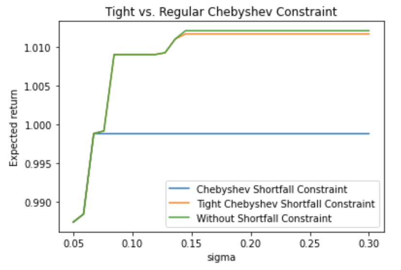

Portofolio optimization with transaction costs
Implementing and extending a popular approach.
In this post, we assess and modestly extend a popular method [1] for portfolio optimization with linear and fixed transaction costs. Our implementation is here.
Portfolio optimization in general.
Objective.
In single-period portfolio optimization, we have a bundle of stocks indexed by \(1, \dots, n - 1\), a riskless asset indexed by \(n\), initial dollar holdings in each asset \(w_1, \dots, w_n\), and at the beginning of the period, we transact dollar amounts \(x_1, \dots, x_n\) in each asset. In the paper, and in this study, we hold the portfolio for a fixed period of 20 days. We assume that the return of each asset at the end of the period is a random vector \(a\) with mean \(\overline{a}\) and covariance matrix \(\Sigma\). Thus we want to select \(x\) such that \(\overline{a}^T(w + x)\), i.e. the mean return of our portfolio, is maximized.
Constraints.
Following the paper, we impose a number of constraints.
Self-financing. The portfolio must be self-financing, i.e. each purchase of an asset must be financed by the sale of an existing asset. Since we incorporate transaction costs, and potentially a different transaction cost function \(\phi_i\) for each asset \(i\), the self-financing constraint is \[ \mathbf{1}^T x + \sum_{i} \phi_i(x_i) \leq 0. \]
Constraint on the variance of final return. If \(W = a^T(w + x)\) is the random variable representing the final return, then \[ \begin{align*} \mathbf{V}(W) &= \mathbf{E}(W^2) - \mathbf{E}(W)^2\\ &= (w+x)^T \mathbf{E}((a - \overline{a})(a - \overline{a})^T)(w + x)\\ &= (w + x)^T\Sigma (w + x). \end{align*} \] so constraining the variance to be less than \(\sigma^2\) yields the standard-form constraint \[ (w + x)^T\Sigma (w + x) - \sigma^2 \leq 0. \]
Short position constraint. We bound the position \(w_i + x_i\) in asset \(i\) below by \(-s_i\). In the paper, and here, \(s_i\) is taken to be \(.05\) for stocks and \(.5\) for the riskless asset.
The final problem, in standard form, is
\[
\begin{align}
\text{maximize} \quad & \overline{a}^T(w + x)\\
\text{subject to} \quad & \mathbf{1}^T x + \sum_{i} \phi_i(x_i) \leq 0\\
& (w + x)^T\Sigma (w + x) - \sigma^2 \leq 0\\
& -s - w - x \leq 0.
\end{align}
\]
When the transaction cost function is convex (e.g., \(0\) in the case of no transaction costs), the above is a convex optimization problem and can be solved very quickly.
Non-convex transaction cost functions
The authors note that
In practice, transaction costs are not convex functions of the amount traded. Indeed, the costs for either buying or selling are likely to be concave. For example, a fixed charge for any nonzero trade is common, and there may be one or more breakpoints above which the transaction costs per share decrease.They choose a fixed plus linear transaction cost function \[ \phi_i(x_i) = \begin{cases} 0, & x_i = 0\\ \beta_{i}^+ + \alpha_{i}^+ x_i, & x_i > 0\\ \beta_{i}^- + \alpha_{i}^- x_i, & x_i < 0 \end{cases} \] to reflect this intuition; the function is illustrated below. Unfortunately, if we use this cost function, the self-financing constraint, and hence the problem, is no longer convex.
The Method.
To get around this, the authors propose a solving a sequence of convex optimization problems whose solutions converge to an approximate solution of the original (non-convex) problem.
Solving a relaxed problem to get an initial guess.
Suppose \(x_i\) is restricted to the interval \(l_i, u_i\). Then define the convex envelope of \(\phi_i\) to be \[ \phi_i^{\text{c.e.}} = \begin{cases} \left(\frac{\beta_i}{u_i} + \alpha_i\right) x_i, & x_i \geq 0\\ -\left(\frac{\beta_i}{l_i} + \alpha_i\right)x_i, & x_i \leq 0 \end{cases} \] where \(\alpha_i\) and \(\beta_i\) are the parameters of \(\phi_i \). This function is a convex lower bound on \(\phi_i\). Therefore
- The original, non-convex optimization problem above, with \(\phi_i\) replaced by \(\phi_i^{\text{c.e.}}\), is a convex optimization problem. We call this problem the relaxed problem, and can solve it quickly to get an initial guess for the iterative scheme, to be discussed next.
- The self-financing constraint for the relaxed problem is less strict, because the convex envelope is a lower bound on the original transaction cost function. Therefore the solution to the relaxed problem is an upper bound on the solution to the original problem.
- Any solution to the relaxed problem is likely to be infeasible for the original, non-convex problem - in particular, unless \(x_i = l_i,\, 0, \text{ or }u_i\), i.e., the convex envelope and \(\phi_i\) agree at \(x_i\), the self-financing constraint is likely to be violated.
Before moving on, we compute transaction bounds \(l_i, u_i\) - to do this, we take advantage of the constraint on the variance of portfolio return. The bounds will depend on how much variance we are comfortable with, i.e. \(\sigma^2\). The upper bound \(u_i\) is given by \[ \begin{align*} \text{maximize} \quad & x_i\\ \text{subject to} \quad & g(x) = (w + x)^T\Sigma(w + x) - \sigma^2 \leq 0 \end{align*} \] The calculation is omitted in the paper but we do it here for practice. The Lagrangian is \[ L(x, \lambda) = e_i^T x - \lambda((w + x)^T\Sigma(w + x) - \sigma^2). \] Maximizing over \(x\) yields \begin{equation*} x = \frac{\Sigma^{-1}e_i}{2\lambda} - w \end{equation*} Resubstituting into the Lagrangian to eliminate the dependence on \(x\) and simplifying, we have \begin{equation*} L(\lambda) = \frac{e_i^T \Sigma^{-1} e_i}{4\lambda} - e_i^T w + \lambda \sigma^2 \end{equation*} which achieves its maximum at \begin{equation*} \lambda = \frac{\sqrt{(\Sigma^{-1})_{ii}}}{2\sigma} \end{equation*} so that \(x_i = \sigma\sqrt{(\Sigma^{-1})_{ii}} - w_i\) is optimal. Mutatis mutandis, the lower bound is \(x_i = -\sigma\sqrt{(\Sigma^{-1})_{ii}} - w_i\). For the lower bound, we use this value or the short selling lower bound, whichever is larger.
The iterative scheme.
Here we present and justify the the iterative scheme. For a full discussion, see the paper. Let \(\delta\) be a small, nonnegative number, and let \(S = \{x: x \text{ satisfies whatever convex risk constraints we choose to impose}\}\). Then the procedure is as follows:- \(\mathbf{k:=0}\). Solve the convex relaxed problem above; let \(x^0\) be the solution to this problem.
- \(\mathbf{k:=k+1}\). Where \(x^{k-1}\) is the solution to the previous problem, let \[ \phi_i^k(x_i) = \left(\frac{\beta_i}{|x_i^{k-1}| + \delta} + \alpha_i\right)|x_i|, \] and solve the modified problem \[ \begin{align} \text{maximize} \quad & \overline{a}^T(w + x)\\ \text{subject to} \quad & \mathbf{1}^T x + \sum_{i} \phi_i^k(x_i) \leq 0\\ & x \in S. \end{align} \] Let \(x_k\) be the solution to this problem.
- Repeat until convergence.
- Converges to a feasible point of the original problem. If the scheme converges, i.e \(x_i^{k+1} \approx x_i^k\), then \[ \phi_i^k(x_i^{k+1}) = \left(\frac{\beta_i}{|x_i^k| + \delta} + \alpha_i\right)|x_i^{k+1}| \approx \beta_i + \alpha_i|x_i^{k+1}| = \phi_i(x_i^{k+1}), \] that is, the modified transaction cost function agrees with the original, non-convex transaction cost function at the solution, so that the solution is feasible for the original problem. The proof that the scheme converges is deferred to the appendix of the paper.
- Drives small transactions to \(0\). Intuitively, the solution should not have small transactions - a small transaction incurs the fixed cost, with marginal extra return. Note that when \(x_i^{k-1}\) is small, the derivative of \(\phi_i^k(x_i)\) is quite large, thus \(x_i\) will be driven to \(0\).
Identifying the optimal solution combinatorially.
For a small number of assets, the exact solution can be identified combinatorially as follows. Given \(n\) assets, choose a subset \(i_1, \dots, i_k\) in which to transact. Then the problem \[ \begin{align} \text{maximize} \quad & \overline{a}^T(w + x)\\ \text{subject to} \quad & \mathbf{1}^T x + \alpha_i |x_i| + \sum_{i_j} \beta_{i_j} \leq 0\\ & x \in S. \end{align} \] is convex, and the solution to the original, non-convex problem is just the optimal solution to the problem above over all possible subsets of \(1, \dots, n\). That is, we solve \(2^n\) convex optimization problems. The authors use this method to verify that solutions to the iterative scheme are nearly optimal.Example with real data.
We implement the iterative scheme, as well as the combinatorial method, and test them on real data.
Gathering the data.
We compute historical returns for the top 100 (alphabetical) S&P stocks over randomly sampled twenty-day periods in 2020, and the sample mean \(\overline{a}\) and covariance matrix \(\Sigma\) of these returns.
Comparing the heuristic and provably optimal methods.
So that the combinatorial solution is tractable, we apply the iterative scheme to a bundle consisting of the last 10 stocks of the 100 stocks above, plus a riskless asset. The optimal and heuristic returns are compared for a range of values of \(\sigma\), the variance of the final portfolio return that is acceptable. Evidently, for a small bundle of stocks, the heuristic and optimal returns coincide exactly.
The role of the short position constraint.
We see in the above return tradeoff curves that the optimal return flatlines after a certain point - this is because, even allowing massive final return variance, we cannot increase our risk (and thus our return) without deepening our short positions in the riskless asset or in stocks with meager return. Recall that for our holdings in each asset \(i\) we have a short constraint \(w_i + x_i \geq -s_i\), where \(s_i\) is .05 and .5 for the risky and riskless assets respectively.
If we double the maximum short position in each stock (\(.05 \to .1\)) and riskless asset (\(.5 \to 1\)), the curve flattens later.
Our choice of stock.
Above, following the paper, we selected the last 10 stocks of the first 100 (alphabetical) of the S&P 500. How much does optimal return depend on the choice of stock bundle? We compute the heuristic expected return at \(\sigma=.2\) for 100 random size-10 subsets of the top 100 stocks - the answer, it seems, is a lot. The outliers all have one stock in common: CZR, which cratered in early 2020 but quickly recovered.A closer look at shortfall risk constraints.
Normallly distributed returns.
A shortfall risk constraint specifies that the end of period wealth should exceed some undesired level \(W_{\text{low}}\) with probability \(\eta\). The authors assume that returns are Gaussian - in that case, the constraint is, where \(\Phi\) is the Gaussian CDF,
\[
\begin{align*}
\Pr \left(\frac{W - \mu}{\sigma} \leq \frac{W_{\text{low}} - \mu}{\sigma} \right) &\leq 1 - \eta.\\
& \leftrightarrow \frac{W_{\text{low}} - \mu}{\sigma} \leq \Phi^{-1}(1 - \eta)\\
& \leftrightarrow \mu - W_{\text{low}} \geq \Phi^{-1}(\eta)\sigma
\end{align*}
\]
so that by substituting \(\mu = \overline{a}^T(w + x)\) and \(\sigma^2 = (w + x)^T\Sigma(w + x)\), we get
\[
\overline{a}^T(w + x) - W_{\text{low}} \geq \Phi^{-1}(\eta) \|\Sigma^{1/2}(w + x)\|_2
\]
which is a second-order cone constraint. Below, we depict how the addition of a shortfall constraint \((\eta = .9, W_{\text{low}} = .8)\) affects the optimal return for different values of \(\sigma\).
Investigating the normality assumption.
The authors imposed the normality assumption only to provide a proof of concept. However, they qualify that stock returns are seldom normal - in particular, they have high kurtosis (fat tails).
We test this hypothesis on our return data. For each stock, we generate 1000 Gaussian replicates (1000 samples each) with the same mean and variance, and compute the percentage of the time a kurtosis as or more extreme as in the real data is observed.
Almost all the time, the real data's kurtosis is larger than all kurtoses observed with synthetic Gaussian data of the same mean and variance. So not only is our data not normal, but also our current shortfall constraints are particularly useless because our data have such fat tails.
Chebyshev's inequality.
The authors mention but do not derive another shortfall risk constraint due to Chebyshev's inequality. We derive it here and later propose a tightening of the resulting bound. Recall that for a random variable \(X\) with finite mean \(\mu\) and variance \(\sigma^2\), we have (Chebyshev's inequality) \[ \Pr(|X - \mu| > t) \leq \frac{\sigma^2}{t^2}. \] Assuming \(W_{\text{low}} \leq \mu\), we have \[ \Pr(W \leq W_{\text{low}}) \leq \Pr(|W - \mu| \geq |W_{\text{low}} - \mu|) \] so that by Chebyshev's inequality, \[ \Pr(W \leq W_{\text{low}}) \leq \frac{\sigma^2}{(W_{\text{low}} - \mu)^2}. \] The constraint bounds the RHS above by \(1 - \eta\). Substituting for \(\sigma\) and \(\mu\), rearranging, and taking the square root of both sides, we get the second-order cone constraint \[ (1 - \eta)^{-1/2} \| \Sigma^{1/2} (w + x)\| \leq \overline{a}^T(w + x) - W_{\text{low}}. \] As expected, the Chebyshev constraint produces worse returns than the normal constraint since it is valid for a wider class of distributions. The normal constraint, on the other hand, coincides exactly with the return curve of the solution without shortfall constraints (not shown).Tightening the Chebyshev bound.
The Chebyshev bound computed above is computed with the following step: \[ \Pr(W \leq W_{\text{low}}) \leq \Pr(|W - \mu| \geq |W_{\text{low}} - \mu|). \] We invoked Chebyshev to dominate the right hand side. However, we are potentially giving up a lot of slack with the inequality above. Concretely, if the distribution is symmetric, then \[ \Pr(W \leq W_{\text{low}}) = \frac{1}{2}\Pr(|W - \mu| \geq |W_{\text{low}} - \mu|) \] so that the original constraint has us dominating a quantity twice as large as necessary. In general, we are able to say that \[ \Pr(W \leq W_{\text{low}}) \leq \frac{1}{2}\Pr(|W - \mu| \geq |W_{\text{low}} - \mu|). \] when the distribution is symmetric (exact equality) or when there is relatively more mass above \(\mu + (\mu - W_{\text{low}})\) than below \(W_{\text{low}}\). For a range of values for \(W_{\text{low}}\), we can estimate the fraction \[ \Pr(W \leq W_{\text{low}})/(\Pr(W \leq W_{\text{low}}) + \Pr(W \geq 2\mu - W_{\text{low}})); \] if it is below .5, the tightening is justified. It suffices to consider the individual stocks - we compute the mean of the fractions above across all the stocks for a range of values \(W_{\text{low}}\). It appears that as \(W_{\text{low}}\) decreases, the fraction decreases; i.e. the tightening is more justified for more relaxed shortfall constraints. The tight Chebyshev constraint produces returns comparable to the normal constraint and the solution without shortfall constraints - we have imposed a single constraint that return exceed \(.7\) with probability \(.95\). By contrast, the "vanilla" Chebyshev constraint with the same \(\eta\) and \(W_{\text{low}}\) is mostly useless - with its too-conservative constraint on variance, the vanilla Chebyshev portfolio is forced to incur transaction costs to deepen its position in the riskless asset, and incurs a loss, on average.
At \(\sigma=.2\) and with short position constraints of .05 and .5 in the risky and riskless assets respectively, the tight Chebyshev portfolio earns a return of 1.16%, or 15% annualized.
Caveats.
There are a number of drawbacks to this method that are worth mentioning. First, and most seriously, the framework assumes that crudely estimated historical means and covariances of returns in a bundle of stocks are predictive of means and covariances of returns in an upcoming 20-day period. Future work would surely involve a backtest to gauge the effectiveness of this method in real-time trading.
Second, we have only studied the iterative scheme in the context of fixed plus linear transaction cost functions. We do not know how it behaves with other cost functions; this is not an idle concern, since for large portfolios, transactions are likely to incur a fixed plus nonlinear cost, as we clear out more of the order book to complete the transaction. Moreover, for even modest numbers of stocks, we cannot check the convergence of the heuristic against the combinatorial optimum, since the latter is too costly to compute.
References.
- Portfolio optimization with linear and fixed transaction costs by Miguel Sousa Lobo, Maryam Fazel, and Stephen Boyd. Annals of Operations Research. 2007.
Author: Ethan Sargent
Date: June 24, 2021